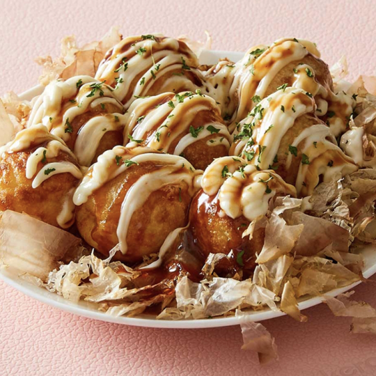
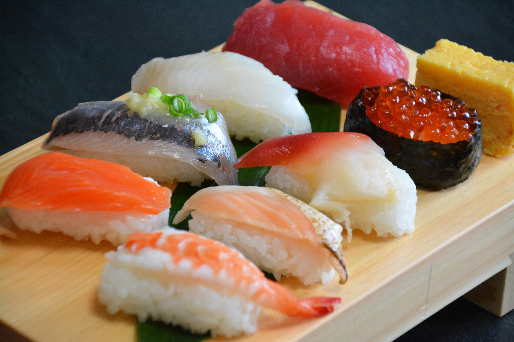
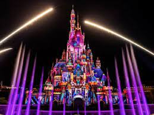

일본은 동아시아에 위치한 섬나라로, 전통 문화와 현대 기술의 조화가 돋보이는 곳이다. 뛰어난 경제력과 기술력을 바탕으로 자동차,애니메이션과 만화 등 다양한 분야에 뛰어난 두각을 나타내고 있다. 사회적으로 예의주시와 조화를 중시하며, 자연 경관도 매우 아름다워 많은 관광객들이 찾는 곳이다.
라멘은 중국어 '라몐'에서 비롯되었는데 이 라몐을 국물에 말아 내놓는 중국 요리 '탕면'이 일본에서 현지화되며 점점 독자적인 형태로 변화한 것이 오늘날의 라면 원형이다. 구체적으로 일본 요리 라멘으로의 전환점이 언제였는지는 명확하지 않지만, 주류 설로는 1870년 요코하마 발생설과 1910년 도쿄 아사쿠사 발생설, 1922년 삿포로 발생설 세 가지가 있다. 그리고 세 발생설 모두 중국 요리가 라멘의 기원임을 명시하고 있다.
타코야키의 역사

타코야키는 일본 오사카의 대중적인 음식으로 1935년경 '오사카의 아이즈야'라는 가게에서 처음 생김. 당시 밀가루 반죽 안에 곤약, 양배추, 파 ,텐카스(튀김 부스러기)가 들어간 '라디오야키'가 있었는데, 이 라디오야키에 문어를 넣기 시작해 오늘날의 타코야키가 탄생함.
스시의 역사

초밥은 원래 보존 식품으로 시작되었다. 쌀에 식초를 섞어 생선을 보존하는 방법에서 유래했으며, 시간이 지나며 현재의 형태로 발전하였다. 초밥의 역사는 일본 문화와 밀접하게 연관되어 있으며 전통적인 초밥의 맛과 형태는 수백 년 동안 이어져 내려오고 있다. 나레즈시 : 가장 오래된 형태의 초밥으로, 발효된 생선과 쌀을 사용. 하야즈시 : 식초를 사용하여 쌀을 신속하게 발효시키는 방법. 에도마에즈시 : 도쿄 지역에서 시작된 신선한 해산물을 사용하는 현대적인 초밥 스타일. 오시즈시 : 나무 틀을 사용하여 모양을 만든 압착된 초밥 형태. 치라시즈시 : 다양한 재료를 쌀 위에 흩뿌려 만드는 초밥.
전설에 따르면 서기 628년 한 어부가 스미다강에서 관음상을 찾았고, 이 여신상을 봉헌하고자 센소지 사원을 지었다고 한다. 오랜 역사에 걸쳐 본당은 수없이 무너졌으나, 일본 전역에서 모인 기부금 덕분에 재건할 수 있었다.
도쿄 타워 역사
1953년 일본의 국영방송인 NHK가 설립되며 대규모 방송 송신탑이 필요했다. 도쿄 타워는 에펠탑 설계를 기반으로 1958년에 완공되었다. 높이 333m로 준공 당시에는 세계에서 가장 높은 독립식 타워였다. 일본에서 가장 높은 건물이라는 자리는 그 뒤로도 꾸준히 수성하다 2010년 스카이트리가 생기면서 자리를 내주게 되었다.
일본 디즈니 랜드 역사

1983년 4월 15일 일본 치바현 우라야스시에서 도쿄 디즈니랜드가 오픈을 했다. 도쿄디즈니랜드는 미키마우스를 만든 미국 월트 디즈니를 모티브로 한 테마파크이다. 미국 외에 디즈니랜드가 오픈을 한 것은 도쿄가 세계최초라고 한다.